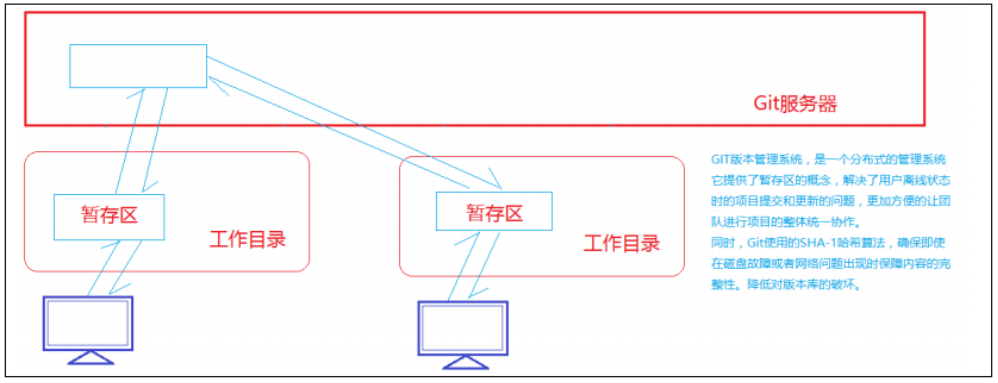

git
Git 是一个开源的分布式版本控制系统，用于敏捷高效的处理任何项目的版本问题。
Git 是 Linus Torvalds 为了帮助管理 Linux 内核开发而开发的一个开放源码的版本控制软件。
Git 与常用的版本控制工具 CVS,SVN 等不同，它采用了分布式版本库的方式，不必服务器端软件支持。
关于项目版本管理：
项目在开发的过程中，经常会出现多人分工协作进行项目分发并开发整合的过程，所以项目在刚开始实行的时候经常会出现一些协作开发的同步的问题，同时存在项目整体进度的控制和管理的问题，所以在程序开发行业衍生出来了版本管理工具。
版本管理工具，首先是一个内容管理工具，可以将项目的内容信息存放在版本管理服务器上方便项目组人员进行访问和查询修改。
版本管理具有里程碑意义的主要有三个阶段：CVS 阶段 SVN 阶段 Git 阶段
CVS 阶段：
项目搭建开发过程中，每次提交项目都会将整个项目提交到服务器进行保存，服务器存储着项目的N 个备份，开发过程中的协作效率较低，同时也出现了各种传输的问题，所以慢慢淡出了
SVN阶段：
考虑到CVS 的缺陷，开发人员研发出专门针对项目版本控制的软件 Subversion （简称 SVN）， SVN 同样也是搭建服务器，让项目组成员将数据存储在服务器上，但是每次改动并提交的时候， SVN 服务器并不重新保存整个项目的完整信息，而是和原来的项目进行对比，只保存改动的信息。这样就在很大的程度上对于项目版本服务器、项目协作效率有了显著的提升。所以至今为止，有很多公司依然选用 SVN 作为公司内部项目协作的版本控制软件。
Git阶段：
前面的CVS 和 SVN 都是基于一个服务器的，如果脱离服务器，项目的版本保存就没有了任何意义，Git 恰恰处理了这样的问题，Git 是一个分布式的版本控制系统，在 Git 中即使用户离线，也能进行项目的提交和更新操作，等到下次连线服务器时进行整体的同步操作。

工作区、暂存区及版本库的概念：
工作区：个人 PC 中能看到的文件目录结构
暂存区： stage/index，一般存放在.git/index 中，所以 git 中的暂存区也会称为索引。
版本库：工作区中的.git 隐藏文件，不算是工作区，而是 Git 的版本库。
安装git
在Windows上安装Git
安装完成后，在开始菜单里找到“Git”->“Git Bash”，蹦出一个类似命令行窗口的东西，就说明Git安装成功！
安装完成后，还需要最后一步设置，在命令行输入：
本地使用
1-创建 git init
2-用命令git add告诉Git，把文件添加到仓库：git add test.html
3-用命令git commit告诉Git，把文件提交到仓库,gitcommit-m“我是注释”
4-运行git status命令看看结果
回退版本
在实际工作中，我们脑子里怎么可能记得一个几千行的文件每次都改了什么内容，不然要版本控制系统干什么。版本控制系统肯定有某个命令可以告诉我们历史记录，在Git中，我们用git log命令查看
git log命令显示从最近到最远的提交日志
你看到的一大串类似1094adb...的是commit id（版本号）
每提交一个新版本，实际上Git就会把它们自动串成一条时间线。如果使用可视化工具查看Git历史，就可以更清楚地看到提交历史的时间线
首先，Git必须知道当前版本是哪个版本，在Git中，用HEAD表示当前版本，上一个版本就是HEAD^，上上一个版本就是HEAD^^，当然往上100个版本写100个^比较容易数不过来，所以写成HEAD~100。
会退到上一个版本
git reset--hard HEAD^
总结
- HEAD指向的版本就是当前版本，因此，Git允许我们在版本的历史之间穿梭，使用命令git reset --hard commit_id。
- 用git log可以查看提交历史，以便确定要回退到哪个版本
- Git提供了一个命令git reflog用来记录你的每一次命令
工作区（Working Directory）
就是你在电脑里能看到的目录，比如我的learngit文件夹就是一个工作区：
版本库（Repository）
工作区有一个隐藏目录.git，这个不算工作区，而是Git的版本库。
Git的版本库里存了很多东西，其中最重要的就是称为stage（或者叫index）的暂存区，还有Git为我们自动创建的第一个分支master，以及指向master的一个指针叫HEAD。

分支和HEAD的概念我们以后再讲。
前面讲了我们把文件往Git版本库里添加的时候，是分两步执行的：
第一步是用git add把文件添加进去，实际上就是把文件修改添加到暂存区；
第二步是用git commit提交更改，实际上就是把暂存区的所有内容提交到当前分支。
因为我们创建Git版本库时，Git自动为我们创建了唯一一个master分支，所以，现在，git commit就是往master分支上提交更改。
你可以简单理解为，需要提交的文件修改通通放到暂存区，然后，一次性提交暂存区的所有修改
注意 ：每次修改，如果不用git add到暂存区，那就不会加入到commit中
撤销修改
在你准备提交前，如果发现代码有问题
$ cat readme.txt
Git is a distributed version control system.
Git is free software distributed under the GPL.
Git has a mutable index called stage.
Git tracks changes of files.
My stupid boss still prefers SVN.
在你准备提交前，一杯咖啡起了作用，你猛然发现了stupid boss可能会让你丢掉这个月的奖金！
既然错误发现得很及时，就可以很容易地纠正它。你可以删掉最后一行，手动把文件恢复到上一个版本的状态。如果用git status查看一下：
$ git status
On branch master
Changes not staged for commit:
(use "git add <file>..." to update what will be committed)
(use "git checkout -- <file>..." to discard changes in working directory)
modified: readme.txt
no changes added to commit (use "git add" and/or "git commit -a")
你可以发现，Git会告诉你，git checkout -- file可以丢弃工作区的修改：
$ git checkout -- readme.txt
命令git checkout -- readme.txt意思就是，把readme.txt文件在工作区的修改全部撤销，这里有两种情况：
一种是readme.txt自修改后还没有被放到暂存区，现在，撤销修改就回到和版本库一模一样的状态；
一种是readme.txt已经添加到暂存区后，又作了修改，现在，撤销修改就回到添加到暂存区后的状态。
总之，就是让这个文件回到最近一次git commit或git add时的状态。
$ cat readme.txt
Git is a distributed version control system.
Git is free software distributed under the GPL.
Git has a mutable index called stage.
Git tracks changes of files.
git checkout -- file命令中的--很重要，没有--，就变成了“切换到另一个分支”的命令，我们在后面的分支管理中会再次遇到git checkout命令。
远程仓库
我们在本地保存代码很不安全，容易丢失（电脑丢失），所以我们一般会在服务器上建立远程仓库，然后下载到本地电脑一份，叫本地仓库，做修改，然后提交到本地git仓库，最后每完成一些功能，我们可以本地电脑上仓库代码同步（推送）到远程仓库。
假设我们从零开发，那么最好的方式是先创建远程库，然后，从远程库下载克隆
免费的远程git服务器
注册账号，然后在远程服务器上 新建一个仓库 ，然后把远程仓库下载到本地
要克隆一个仓库，首先必须知道仓库的地址，然后使用git clone命令克隆
每次本地提交后，只要有必要，就可以使用命令git push origin master推送最新修改
分支管理
每次提交，Git都把它们串成一条时间线，这条时间线就是一个分支。截止到目前，只有一条时间线，在Git里，这个分支叫主分支，即master分支。HEAD严格来说不是指向提交，而是指向master，master才是指向提交的，所以，HEAD指向的就是当前分支。
一开始的时候，master分支是一条线，Git用master指向最新的提交，再用HEAD指向master，就能确定当前分支，以及当前分支的提交点：

每次提交，master分支都会向前移动一步，这样，随着你不断提交，master分支的线也越来越长：
当我们创建新的分支，例如dev时，Git新建了一个指针叫dev，指向master相同的提交，再把HEAD指向dev，就表示当前分支在dev上：

你看，Git创建一个分支很快，因为除了增加一个dev指针，改改HEAD的指向，工作区的文件都没有任何变化！
不过，从现在开始，对工作区的修改和提交就是针对dev分支了，比如新提交一次后，dev指针往前移动一步，而master指针不变：

假如我们在dev上的工作完成了，就可以把dev合并到master上。Git怎么合并呢？最简单的方法，就是直接把master指向dev的当前提交，就完成了合并：

所以Git合并分支也很快！就改改指针，工作区内容也不变！
合并完分支后，甚至可以删除dev分支。删除dev分支就是把dev指针给删掉，删掉后，我们就剩下了一条master分支：

首先，我们创建dev分支，然后切换到dev分支：
$ git checkout -b dev
Switched to a new branch 'dev'
git checkout命令加上-b参数表示创建并切换，相当于以下两条命令：
$ git branch dev
$ git checkout dev
Switched to branch 'dev'
然后，用git branch命令查看当前分支：
$ git branch
* dev
master
git branch命令会列出所有分支，当前分支前面会标一个*号。
然后，我们就可以在dev分支上正常提交，比如对readme.txt做个修改，加上一行：
Creating a new branch is quick.
然后提交：
$ git add readme.txt
$ git commit -m "branch test"
[dev b17d20e] branch test
1 file changed, 1 insertion(+)
现在，dev分支的工作完成，我们就可以切换回master分支：
$ git checkout master
Switched to branch 'master'
切换回master分支后，再查看一个readme.txt文件，刚才添加的内容不见了！因为那个提交是在dev分支上，而master分支此刻的提交点并没有变：

现在，我们把dev分支的工作成果合并到master分支上：
$ git merge dev
Updating d46f35e..b17d20e
Fast-forward
readme.txt | 1 +
1 file changed, 1 insertion(+)
git merge命令用于合并指定分支到当前分支。合并后，再查看readme.txt的内容，就可以看到，和dev分支的最新提交是完全一样的。
合并完成后，就可以放心地删除dev分支了：
$ git branch -d dev
Deleted branch dev (was b17d20e).
删除后，查看branch，就只剩下master分支了：
$ git branch
* master
因为创建、合并和删除分支非常快，所以Git鼓励你使用分支完成某个任务，合并后再删掉分支，这和直接在master分支上工作效果是一样的，但过程更安全。
Git鼓励大量使用分支：
查看分支：git branch
创建分支：git branch <name>
切换分支：git checkout <name>
创建+切换分支：git checkout -b <name>
合并某分支到当前分支：git merge <name>
删除分支：git branch -d <name>
冲突解决
人生不如意之事十之八九，合并分支往往也不是一帆风顺的。
准备新的feature1分支，继续我们的新分支开发：
$ git checkout -b feature1
Switched to a new branch 'feature1'
修改readme.txt最后一行，改为：
Creating a new branch is quick AND simple.
在feature1分支上提交：
$ git add readme.txt
$ git commit -m "AND simple"
[feature1 14096d0] AND simple
1 file changed, 1 insertion(+), 1 deletion(-)
切换到master分支：
$ git checkout master
Switched to branch 'master'
Your branch is ahead of 'origin/master' by 1 commit.
(use "git push"to publish your local commits)
Git还会自动提示我们当前master分支比远程的master分支要超前1个提交。
在master分支上把readme.txt文件的最后一行改为：
Creating a new branch is quick & simple.
提交：
$ git add readme.txt
$ git commit -m "& simple"
[master 5dc6824] & simple
1 file changed, 1 insertion(+), 1 deletion(-)
现在，master分支和feature1分支各自都分别有新的提交，变成了这样：

这种情况下，Git无法执行“快速合并”，只能试图把各自的修改合并起来，但这种合并就可能会有冲突，我们试试看：
$ git merge feature1
Auto-merging readme.txt
CONFLICT (content):Merge conflict in readme.txt
Automatic merge failed; fix conflicts andthen commit the result.
果然冲突了！Git告诉我们，readme.txt文件存在冲突，必须手动解决冲突后再提交。git status也可以告诉我们冲突的文件：
$ git status
On branch master
Your branch is ahead of 'origin/master' by 2 commits.
(use"git push" to publish your local commits)
You have unmerged paths.
(fix conflicts and run "git commit")
(use"git merge --abort" to abort the merge)
Unmerged paths:
(use"git add <file>..." to mark resolution)
both modified: readme.txt
no changes added to commit (use"git add"and/or"git commit -a")
我们可以直接查看readme.txt的内容：
Git is a distributed version control system.
Git is free software distributed under the GPL.
Git has a mutable index called stage.
Git tracks changes of files.
<<<<<<<HEAD
Creatinganewbranchisquick & simple.
=======
CreatinganewbranchisquickANDsimple.
>>>>>>> feature1
Git用<<<<<<<，=======，>>>>>>>标记出不同分支的内容，我们修改如下后保存：
Creating a new branch is quick and simple.
再提交：
$ git add readme.txt
$ git commit -m "conflict fixed"
[master cf810e4] conflict fixed
现在，master分支和feature1分支变成了下图所示：

用带参数的git log也可以看到分支的合并情况：
$ git log --graph --pretty=oneline --abbrev-commit
* cf810e4 (HEAD -> master) conflict fixed
|\
| * 14096d0 (feature1) AND simple
* | 5dc6824 & simple
|/
* b17d20e branch test
* d46f35e (origin/master) remove test.txt
* b84166e add test.txt
* 519219b git tracks changes
* e43a48b understand how stage works
* 1094adb append GPL
* e475afc add distributed
* eaadf4e wrote a readme file
最后，删除feature1分支：
$ git branch -d feature1
Deleted branch feature1 (was 14096d0).
当Git无法自动合并分支时，就必须首先解决冲突。解决冲突后，再提交，合并完成。
解决冲突就是把Git合并失败的文件手动编辑为我们希望的内容，再提交。
用git log --graph命令可以看到分支合并图。
推送分支
推送分支，就是把该分支上的所有本地提交推送到远程库。推送时，要指定本地分支，这样，Git就会把该分支推送到远程库对应的远程分支上：
$ git push origin master
如果要推送其他分支，比如dev，就改成：
$ git push origin dev
但是，并不是一定要把本地分支往远程推送，那么，哪些分支需要推送，哪些不需要呢？
- master分支是主分支，因此要时刻与远程同步；
- dev分支是开发分支，团队所有成员都需要在上面工作，所以也需要与远程同步；
抓取分支
多人协作时，大家都会往master和dev分支上推送各自的修改。
当你的小伙伴从远程库clone时，默认情况下，你的小伙伴只能看到本地的master分支。不信可以用git branch命令看看：
$ git branch
* master
现在，你的小伙伴要在dev分支上开发，就必须创建远程origin的dev分支到本地，于是他用这个命令创建本地dev分支：
$ git checkout -b dev origin/dev
现在，他就可以在dev上继续修改，然后，时不时地把dev分支push到远程：
$ git add env.txt
$ git commit -m "add env"
[dev 7a5e5dd] add env
1 file changed, 1 insertion(+)
create mode 100644 env.txt
$ git push origin dev
Counting objects: 3, done.
Delta compression using up to4 threads.
Compressing objects: 100% (2/2), done.
Writing objects: 100% (3/3), 308 bytes | 308.00 KiB/s, done.
Total 3 (delta 0), reused 0 (delta 0)
f52c633..7a5e5dd dev -> dev
你的小伙伴已经向origin/dev分支推送了他的提交，而碰巧你也对同样的文件作了修改，并试图推送：
$ cat env.txt
env
$ git add env.txt
$ git commit -m "add new env"
[dev 7bd91f1] add new env
1 file changed, 1 insertion(+)
create mode 100644 env.txt
$ git push origin dev
! [rejected] dev -> dev (non-fast-forward)
hint: Updates were rejected because the tip of your current branch is behind
hint: its remote counterpart. Integrate the remote changes (e.g.
hint: 'git pull ...') before pushing again.
hint: See the 'Note about fast-forwards'in'git push --help'for details.
推送失败，因为你的小伙伴的最新提交和你试图推送的提交有冲突，解决办法也很简单，Git已经提示我们，先用git pull把最新的提交从origin/dev抓下来，然后，在本地合并，解决冲突，再推送：
$ git pull
There is no tracking information for the current branch.
Please specify which branch you want to merge with.
See git-pull(1) for details.
git pull <remote> <branch>
If you wish to set tracking information for this branch you can do so with:
git branch --set-upstream-to=origin/<branch> dev
git pull也失败了，原因是没有指定本地dev分支与远程origin/dev分支的链接，根据提示，设置dev和origin/dev的链接：
$ git branch --set-upstream-to=origin/dev dev
Branch 'dev' set up to track remote branch 'dev'from'origin'.
再pull：
$ git pull
Auto-merging env.txt
CONFLICT (add/add):Merge conflict in env.txt
Automatic merge failed; fix conflicts andthen commit the result.
这回git pull成功，但是合并有冲突，需要手动解决，解决的方法和分支管理中的解决冲突完全一样。解决后，提交，再push：
$ git commit -m "fix env conflict"
[dev 57c53ab] fix env conflict
$ git push origin dev
Counting objects: 6, done.
Delta compression using up to4 threads.
Compressing objects: 100% (4/4), done.
Writing objects: 100% (6/6), 621 bytes | 621.00 KiB/s, done.
Total 6 (delta 0), reused 0 (delta 0)
7a5e5dd..57c53ab dev -> dev
- 查看远程库信息，使用git remote -v；
- 本地新建的分支如果不推送到远程，对其他人就是不可见的；
- 从本地推送分支，使用git push origin branch-name，如果推送失败，先用git pull抓取远程的新提交；
- 在本地创建和远程分支对应的分支，使用git checkout -b branch-name origin/branch-name，本地和远程分支的名称最好一致；
- 建立本地分支和远程分支的关联，使用git branch --set-upstream branch-name origin/branch-name；
- 从远程抓取分支，使用git pull，如果有冲突，要先处理冲突。
2.具体使用
https://gitee.com/ 如果想要自己搭建git服务器 gitlab
1- 安装git，安装TortoiseGit
2-第一次进公司需要下载项目
3-克隆clone https://git.oschina.net/xiang/elm.git
4-修改一下代码，提交本地 commit
5- 每提交给服务器之前都需要pull（拉）一下，把最新的代码拉下来
6.提交给服务器 push